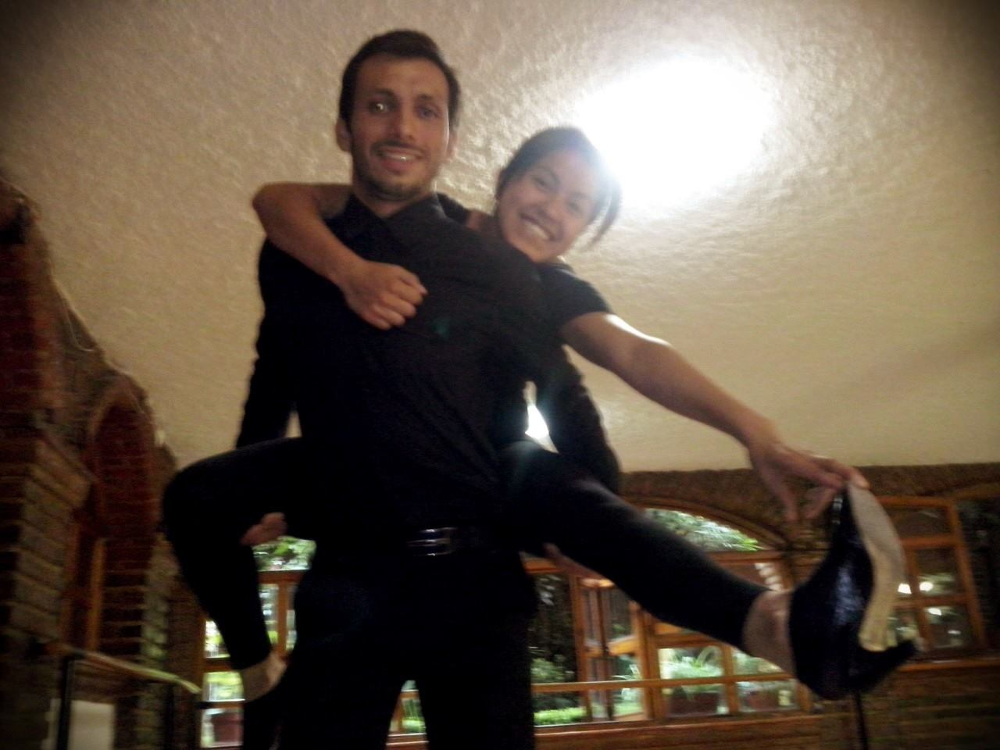

Nací en 1993, siempre he sido una persona muy activa y que ama aprender. A lo largo de todos estos años he formado parte de diversos grupos como "Scouts", la compañia de teatro "Drama, Sangre y Cenizas", sin contar el coro de la prepa, un grupo de baile regional, un club de futbol, entre otros similares. Actualmente me encuentro en un grupo de Danza Africana y en el grupo de competencia de Baile Deportivo de la UNAM.
Como habrás notado, las cosas que más amo hacer, están relacionadas con el arte y principalmente con la danza, pues amo bailar, amo danzar. La danza para mi es un punto de liberación que me permite entrar en un estado catártico y tomarme la vida con mejor disposición
Mensaje importante: En realidad esta página fue realizada a petición de Laboratoria, como práctica en html.
